二、绳索悬挂物平衡问题的特殊处理方法
在物体平衡问题中，存在着大量的绳索悬挂物平衡的问题，在求解这类问题时有多种解法。如果是共点力平衡的问题，就有力的平行四边形法则、三角形法则、正交分解法和拉密定理等几种方法。如果是非共点力平衡问题，就要利用刚体平衡条件求解。用刚体平衡条件求解有关绳索悬挂物平衡的问题时，我们一般习惯于把绳索悬挂中的刚性物体作为研究对象。但这样处理绳索悬挂物的平衡问题，往往造成受力分析较难和数学运算较为复杂。下面以实际例子来说明这样处理绳索悬挂物的平衡问题的复杂性。
例 1双绳悬挂木杆，两端各挂重物
如图 1-20 所示，长为 \( L \) 的均匀木杆 \( AB \) 重量为 \( G \)，系在两根长均为 \( L \) 的细绳的两端，并悬挂于 \( O \) 点，在 \( A \)、\( B \) 两端各挂一重量分别为 \( P \)、\( Q \) 的物体，求杆 \( AB \) 处于平衡时，绳 \( OA \) 与竖直线的夹角。
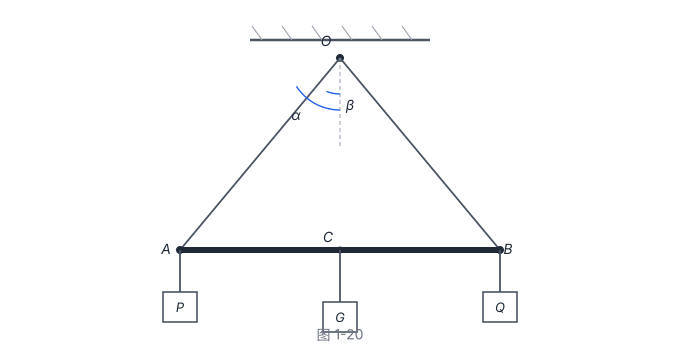
解法一以 \( AB \) 为研究对象，则 \( AB \) 受重力 \( G \)、绳子拉力 \( T_A \)、\( T_B \)，以及重物对杆 \( AB \) 的拉力 \( P \)、\( Q \) 的作用。杆 \( AB \) 在这些力的作用下处于平衡状态，满足刚体平衡条件。
设 \( OA \) 与竖直线的夹角为 \( \alpha \)，\( OC \) 与竖直线的夹角为 \( \beta \)。因为 \( \triangle OAB \) 为等边三角形，\( C \) 为 \( AB \) 边的中点，所以 \( \angle AOC = \dfrac{1}{2}\angle AOB = 30^\circ \)，即 \( \alpha + \beta = 30^\circ \)，所以 \( \beta = 30^\circ - \alpha \)。
以 \( A \) 点为轴，有 \( T_B \cdot \overline{AD} - G \cdot \dfrac{L}{2}\cos\beta - QL\cos\beta = 0 \)，即 \( T_B L\sin 60^\circ - G \cdot \dfrac{L}{2}\cos(30^\circ - \alpha) - QL\cos(30^\circ - \alpha) = 0 \)，即
以 \( B \) 点为转轴，有 \( T_A \cdot \overline{BE} - G \cdot \dfrac{L}{2}\cos\beta - PL\cos\beta = 0 \)，即
由 \( \sum F_x = 0 \)，有 \( T_A \cos(60^\circ + \beta) - T_B \cos(60^\circ - \beta) = 0 \)，即 \( T_A \cos(90^\circ - \alpha) - T_B \cos(30^\circ + \alpha) = 0 \)，得
由 ①、② 两式可得
由 ③、④ 两式得
所以
则
所以
故绳 \( OA \) 与竖直线的夹角为 \( \arctan \dfrac{\sqrt{3}(2Q + G)}{4P + 3G + 2Q} \)。
例 1 的解法一是选杆 \( AB \) 为研究对象，这种解法受力分析较为复杂，各个力的力臂也容易弄错，所列方程也较多，数学运算较繁。这种方法虽然是基本方法，但不够简洁。
有没有比解法一更简便的方法呢？当然有。只不过需要对绳索悬挂物平衡的问题作一些特殊处理。如把例 1 中的图 1-20 所示的绳索 \( OA \)、\( OB \) 和杆 \( AB \) 一起作为刚体来处理，并选 \( OAB \) 整体为研究对象，就可以得到一种非常简便的解法。
解法二以 \( \triangle OAB \) 整体为研究对象，并以 \( O \) 为转轴，其受力情况如图 1-21 所示。
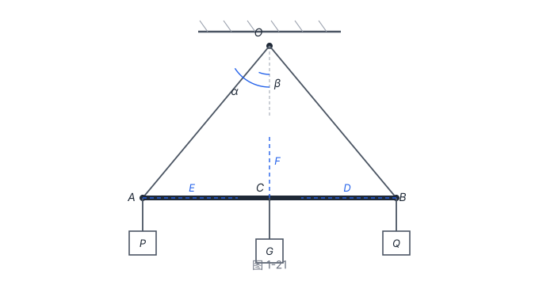
因为 \( \alpha + \beta = 30^\circ \)，所以 \( \beta = 30^\circ - \alpha \)。
因为 \( \overline{OC} = L\sin 60^\circ = \dfrac{\sqrt{3}}{2}L \)，所以 \( \overline{CF} = \overline{OC}\sin\beta = \dfrac{\sqrt{3}}{2}L\sin(30^\circ - \alpha) \)。
又 \( \overline{BD} = L\cos(60^\circ - \beta) = L\cos(30^\circ + \alpha) \)，\( \overline{AE} = L\sin\alpha \)。
故以 \( O \) 为转轴，由刚体平衡条件可知 \( P \cdot \overline{AE} = G \cdot \overline{CF} + Q \cdot \overline{BD} \)，所以
又
将 ②、③ 代入 ① 得
得
所以
※绳索什么时候可以当作刚体
在例 1 的解法二中，我们把绳索 \( OA \)、\( OB \) 当作刚体，这样做行不行呢？在什么条件下绳索可以作为刚体处理呢？下面我们就来讨论这个问题。
绳索是很容易变形的，一般不能作为刚体处理，但在某些特殊情况下，可以把绳索当作刚体来处理。例如，在例 1 中，绳索 \( OA \)、\( OB \) 只受到沿其轴线向外的拉力作用而处于平衡状态。在这种情况下，绳索 \( OA \)、\( OB \) 的「软」性可不考虑，它所起的力学作用，相当于以 \( O \) 为轴可以转动而正处于平衡状态下的刚性物体。因此，绳索 \( OA \)、\( OB \) 可以当作刚体。
由此可知，绳索悬挂物处于平衡状态时，只要绳索只受到沿其轴线向外的拉力时，绳索就可以当作刚体来处理。下面再举几个例子进一步说明绳索悬挂物平衡问题的特殊解法。
例 2直角折绳悬挂重物
如图 1-22 所示，用两根绳折成一直角，悬挂一重为 \( G \) 的物体，已知绳 \( OA \) 与水平方向的夹角为 \( \alpha \)，求绳 \( OB \) 的张力。
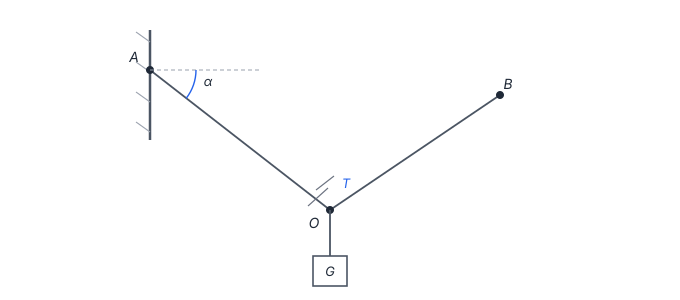
解绳 \( OA \) 只受到沿其轴线向外的拉力，故可当作刚体处理。以绳 \( OA \) 为对象，\( A \) 为转轴，由刚体平衡条件可知
则
用共点力平衡条件求出的结果也如上相同，由此说明这种处理绳索悬挂平衡问题的方法是正确的。
例 3长绳三段挂两个重物
如图 1-23 所示，一根长绳系于 \( A \)、\( D \) 两点，绳上 \( B \)、\( C \) 两点处各挂一个重为 \( G \) 的物体，\( AB \) 和 \( CD \) 与铅直线分别成 \( 30^\circ \) 和 \( 60^\circ \) 角。求系统平衡时，\( BC \) 绳和铅直线间的夹角。
为了对比，本题用两种方法求解。
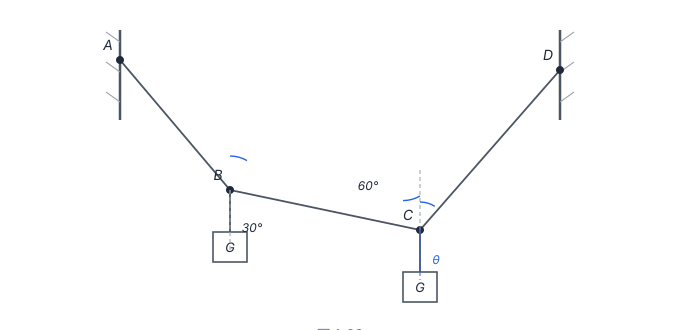
解法一用共点力平衡条件求解。设 \( AB \)、\( BC \)、\( CD \) 三段绳中张力分别为 \( T_1 \)、\( T_2 \)、\( T_3 \)，绳 \( BC \) 与铅直线的夹角为 \( \theta \)，如图 1-23 所示。
当 \( B \) 点平衡时，有
当 \( C \) 点平衡时，有
由 ① 式得 \( T_1 = \dfrac{T_2 \sin\theta}{\sin\alpha} \)，代入 ② 式得
由 ③ 式得 \( T_3 = \dfrac{T_2 \sin\theta}{\sin\beta} \)，代入 ④ 式得
由 ⑤、⑥ 式得 \( \cot\alpha \sin\theta - \cos\theta = \cot\beta \sin\theta + \cos\theta \)。又 \( \alpha = 30^\circ \)，\( \beta = 60^\circ \)，所以
所以
又 \( \theta < 90^\circ \)，所以 \( \theta = 60^\circ \)。
解法二用刚体平衡条件求解。选 \( BC \) 段为研究对象，题设与解法一相同，则 \( BC \) 段受力情况如图 1-24 所示。
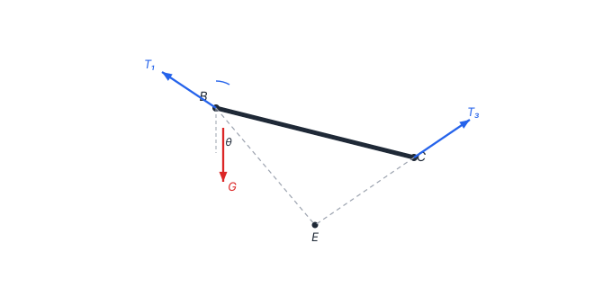
因为 \( \alpha = 30^\circ \)，\( \beta = 60^\circ \)，所以 \( \angle EBC = \theta - \alpha = \theta - 30^\circ \)。
以 \( B \) 为转轴，有 \( G \cdot \overline{BC} \sin\theta = T_3 \cdot \overline{BE} \)，所以
以 \( C \) 为转轴，有 \( G \cdot \overline{BC} \sin\theta = T_1 \cdot \overline{CE} \)，所以
由 \( \sum F_x = 0 \)，得
由 ③ 得
由 ①、② 两式得
由 ④、⑤ 两式可得 \( \cot(\theta - 30^\circ) = \sqrt{3} \)。又 \( \theta - 30^\circ < 90^\circ \)，所以 \( \theta - 30^\circ = 30^\circ \)，即 \( \theta = 60^\circ \)。
对比本题的两种解法可知，绳索悬挂平衡问题中的绳完全可以当刚体来处理。如图 1-24 中不仅 \( BC \) 可以当刚体来处理，而且 \( AB \)、\( CD \)、折线 \( ABC \)、\( BCD \) 均可作刚体处理，有兴趣的读者不妨试一试。
例 4细杆悬球与绳挂球系统
如图 1-25 所示，\( P \) 球用一根没有重量的细杆 \( OC \) 悬在 \( O \) 点，杆的上端可绕其 \( O \) 点自由转动，杆长为 \( L \)，在 \( O \) 点还系着一条绳子，绳的另一端拴着一个重为 \( Q \) 的小球。问当系统达到平衡状态时，杆 \( OC \) 与竖直方向的夹角 \( \alpha \) 是多少？
为了对比，本题仍用两种方法求解。
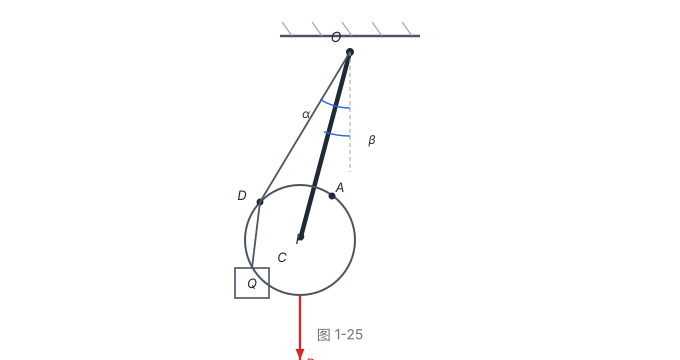
解法一用共点力的平衡条件求解。
\( A \) 点受重力 \( P \)、杆的拉力 \( T_1 \)、绳对球的压力 \( N_1 \) 作用。绳上的 \( D \) 点受 \( B \) 球的拉力 \( Q \)、绳的拉力 \( T_2 \)、\( A \) 球的压力 \( N_2 \) 作用，如图 1-25 所示。
对 \( A \) 点，由 \( \sum F = 0 \)，可知
对 \( D \) 点，有
又 \( N_1 = N_2 \) ⑤。由 ①、② 式得
由 ③、④ 式得
将 ⑥、⑦ 式代入 ⑤ 得 \( P \tan\alpha = Q \tan\beta \)。
又 \( \tan\beta = \dfrac{\overline{DH}}{\overline{OH}} = \dfrac{r - \overline{AH}}{\overline{OH}} = \dfrac{r - (L + r)\sin\alpha}{(L + r)\cos\alpha} \)，所以
所以
解法二用刚体平衡条件求解。此时绳 \( OD \) 只受到沿其轴线向外的拉力作用，故可以作为刚体处理。以 \( \triangle OAD \) 为研究对象，则受力情况分析如图 1-26 所示。以 \( O \) 为转轴，由刚体平衡条件可知
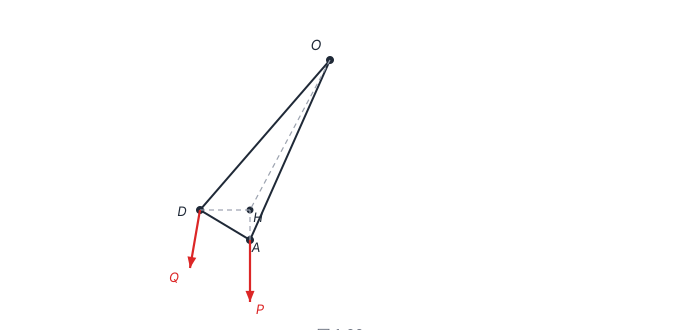
又 \( \overline{DH} = \overline{AD} - \overline{AH} = r - (L + r)\sin\alpha \)，所以
所以
对比本题两种解法可知，解法二的受力分析简单，所列方程少，数学运算也非常简便，因此这种解法明显优于解法一。这更加体现了用这种特殊方法处理绳索悬挂物平衡问题的优越性。
从解法二中还可以看出，不仅绳索 \( OD \) 可以作为刚体处理，而且几何线段 \( AD \)、\( AC \) 也可以作为刚体处理。下面举几个例子来说明绳索悬挂物平衡问题中的几何线段可以作为刚体处理。
例 5细绳吊杆加水平拉力
如图 1-27 所示，用细绳 \( AB \) 吊起的重量为 \( G \) 的不均匀的木杆 \( BC \)，被水平拉力 \( F \) 拉到图中所示位置，若细绳与水平线成 \( 60^\circ \) 角，木杆与水平线成 \( 30^\circ \) 角，求力 \( F \) 的大小及木杆重心的位置。
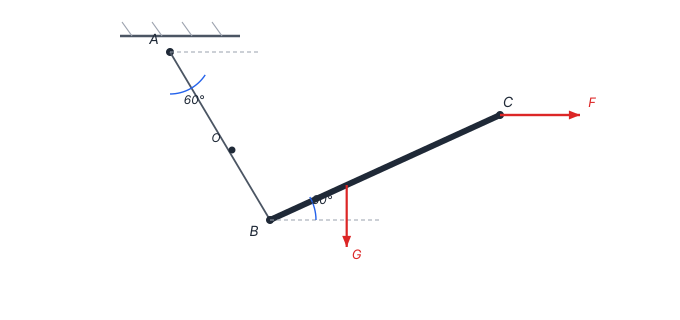
解系统处于平衡状态时，木杆 \( BC \) 实际上受三个力作用：绳的张力 \( T \)、水平拉力 \( F \)、杆的重量 \( G \)。这三个力共点，且重力的作用线又必须通过绳的张力和水平力 \( F \) 的作用线的交点 \( O \)，因此线段 \( AO \) 可以看做力 \( F \) 和 \( G \) 作用下处于平衡状态下的刚体，这样，水平力 \( F \) 及木杆重心位置可用刚体平衡条件来求解。
设绳长为 \( l \)、木杆长为 \( L \)，木杆重心偏离木杆左端的距离为 \( x \)，选木杆为研究对象，以 \( B \) 为转轴，有
选 \( OA \) 为研究对象，以 \( A \) 为转轴，有
② − ① 得
将 ③ 式代入 ① 式得
例 6重球用绳悬挂靠在光滑竖直墙上
如图 1-28 所示，一个半径为 \( R \) 的重球，用长 \( L \) 的绳子悬挂在光滑的竖直墙壁的 \( A \) 处，求绳的张力和墙对球的弹力。
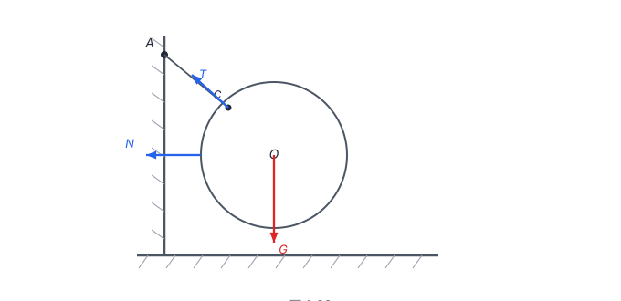
解球受三个共点力作用：重力 \( G \)、弹力 \( N \)、绳的拉力 \( T \)。
选 \( AO \) 为研究对象，以 \( A \) 为转轴，则有
所以
选 \( BO \) 为研究对象，以 \( B \) 为转轴，则有
而
所以
例 7小球放在光滑球面上由绳牵住
如图 1-29 所示，重力为 \( G \) 的小球吊在长为 \( L \) 的绳上，绳的上端固定在 \( A \) 点，小球放在半径为 \( R \) 的光滑球面上，球面的球心为 \( O \)，\( AO \) 为铅直线，并且 \( AO = R + d \)。求绳的张力和球面的弹力。
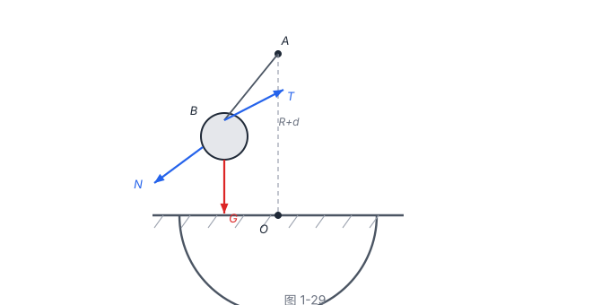
解因小球处于平衡状态，不仅细线 \( AB \) 可以当作刚体，而且有同样的理由可以把几何线段 \( OB \) 当作刚体。这是因为虽然随着细线 \( AB \) 的变化，小球在大球上的位置不同，但在 \( \angle ABO > \dfrac{\pi}{2} \) 的范围内，几何线段 \( OB \) 可以看作绕 \( O \) 点可以转动而正处于平衡状态下的刚体，这样就可以用刚体平衡条件求解了。
设 \( \triangle OAB \) 的内角分别为 \( \alpha \)、\( \beta \)、\( \gamma \)，小球受重力 \( G \)、弹力 \( N \)、张力 \( T \) 作用。选 \( AB \) 为研究对象，\( A \) 点为转轴，有
选 \( OB \) 为研究对象，以 \( O \) 为转动轴，有
又在 \( \triangle OAB \) 中，由正弦定理得
由 ① 得
由 ②、③ 得
例 8两球两绳悬挂成正三角形
半径为 \( R \) 的 \( A \)、\( B \) 两球，重分别为 \( Q \)、\( P \)，用长均为 \( R \) 的两根细绳 \( OC \)、\( OD \) 悬挂着处于平衡状态（如图 1-30 所示），求悬绳 \( OD \) 与铅直线间夹角 \( \alpha \)。
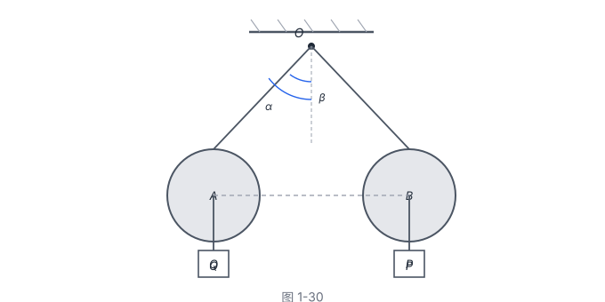
解因为 \( OA = AB = OB \)，所以 \( \triangle OAB \) 为正三角形，有
得
在本题中，绳 \( OC \)、\( OD \) 及线段 \( AB \)、\( BD \)、\( AC \) 均可当作刚体处理，故 \( \triangle OAB \) 也可当作刚体。选 \( \triangle OAB \) 为研究对象，以 \( O \) 为转轴，由刚体平衡条件可得
又
所以
所以
从上面的分析和讨论可知，当绳索悬挂物处于平衡状态时，绳索及有关的几何线段可以当作刚体处理。这种处理绳索悬挂物平衡问题的特殊方法比传统的处理方法要简便得多。掌握这种方法有助于锻炼自己的思维能力和提高自己的解题能力。